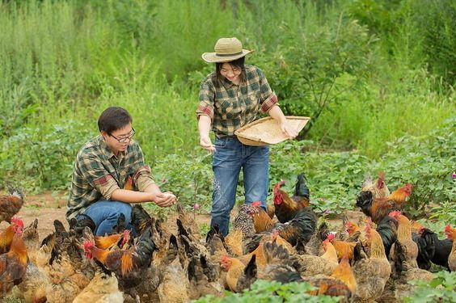

We raise free-range chickens with care and sell them by age, so you can pick the right bird for your yard, your flock, or your table.
Shop chickensPoultry Shop is a family-run farm. Every chicken is raised outdoors, fed well, and checked by hand before it is sold. Each listing shows its age, breed, and price clearly.

Pick the age that fits what you need.
Available now.